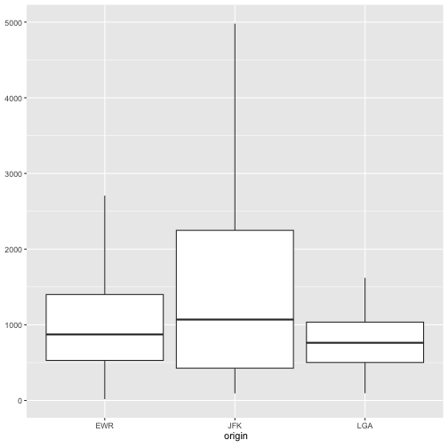
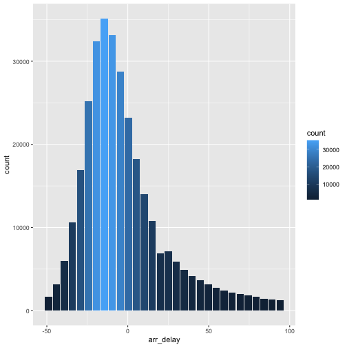
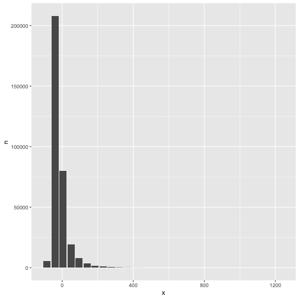

Leverages dplyr to process the calculations of a plot inside a database. This package provides helper functions that abstract the work at three levels:
- Functions that output a
ggplot2object - Functions that output a
data.frameobject with the calculations - Functions that create formulas for calculating bins for a Histogram or a Raster plot
Installation
You can install the released version from CRAN:
install.packages("dbplot")Or the development version from GitHub, using the remotes package:
install.packages("remotes")
pak::pak("edgararuiz/dbplot")Connecting to a data source
For more information on how to connect to databases, including Hive, please visit https://solutions.posit.co/connections/db/
To use Spark, please visit the
sparklyrofficial website: https://spark.posit.co
Example
The functions work with standard database connections (via DBI/dbplyr) and with Spark connections (via sparklyr). A local DuckDB database will be used for the examples in this README.
ggplot
Histogram
By default dbplot_histogram() creates a 30 bin histogram
library(ggplot2)
db_flights |>
dbplot_histogram(distance)
Histogram of flight distances with default 30 bins
Use binwidth to fix the bin size
db_flights |>
dbplot_histogram(distance, binwidth = 400)
Histogram of flight distances with 400-unit bins
Because it outputs a ggplot2 object, more customization can be done
db_flights |>
dbplot_histogram(distance, binwidth = 400) +
labs(title = "Flights - Distance traveled") +
theme_bw()
Customized histogram with title and theme
Raster
To visualize two continuous variables, we typically resort to a Scatter plot. However, this may not be practical when visualizing millions or billions of dots representing the intersections of the two variables. A Raster plot may be a better option, because it concentrates the intersections into squares that are easier to parse visually.
A Raster plot basically does the same as a Histogram. It takes two continuous variables and creates discrete 2-dimensional bins represented as squares in the plot. It then determines either the number of rows inside each square or processes some aggregation, like an average.
- If no
fillargument is passed, the default calculation will be count,n()
db_flights |>
dbplot_raster(sched_dep_time, sched_arr_time)
Raster plot of scheduled departure and arrival times
- Pass an aggregation formula that can run inside the database
db_flights |>
dbplot_raster(
sched_dep_time,
sched_arr_time,
mean(distance, na.rm = TRUE)
)
Raster plot showing average flight distance by time
- Increase or decrease for more, or less, definition. The
resolutionargument controls that, it defaults to 100
db_flights |>
dbplot_raster(
sched_dep_time,
sched_arr_time,
mean(distance, na.rm = TRUE),
resolution = 20
)
Raster plot with lower resolution (20x20 grid)
Bar Plot
-
dbplot_bar()defaults to a count() of each value in a discrete variable
db_flights |>
dbplot_bar(origin)
Bar plot of flight counts by origin airport
- Pass an aggregation formula that will be calculated for each value in the discrete variable
db_flights |>
dbplot_bar(origin, avg_delay = mean(dep_delay, na.rm = TRUE))
Bar plot of average departure delay by origin airport
Line plot
-
dbplot_line()defaults to a count() of each value in a discrete variable
db_flights |>
dbplot_line(month)
Line plot of flight counts by month
- Pass a formula that will be operated for each value in the discrete variable
db_flights |>
dbplot_line(month, avg_delay = mean(dep_delay, na.rm = TRUE))
Line plot of average departure delay by month
Boxplot
It expects a discrete variable to group by, and a continuous variable to calculate the percentiles and IQR. It doesn’t calculate outliers.
Boxplot functions require database support for percentile/quantile calculations.
Supported databases:
- DuckDB (recommended for local examples) - uses
quantile() - Spark/Hive (via sparklyr) - uses
percentile_approx() - SQL Server (2012+) - uses
PERCENTILE_CONT() - PostgreSQL (9.4+) - uses
percentile_cont() - Oracle (9i+) - uses
PERCENTILE_CONT()
Not supported: SQLite, MySQL < 8.0, MariaDB (no percentile functions)
Here is an example using dbplot_boxplot() with a local data frame:
nycflights13::flights |>
dbplot_boxplot(origin, distance)
Boxplot of flight distances by origin airport (local data)
Boxplot also works with database connections that support quantile functions:
db_flights |>
dbplot_boxplot(origin, distance)
Boxplot of flight distances by origin airport (DuckDB)
Calculation functions
If a more customized plot is needed, the data the underpins the plots can also be accessed:
-
db_compute_bins()- Returns a data frame with the bins and count per bin -
db_compute_count()- Returns a data frame with the count per discrete value -
db_compute_raster()- Returns a data frame with the results per x/y intersection -
db_compute_raster2()- Returns same asdb_compute_raster()function plus the coordinates of the x/y boxes -
db_compute_boxplot()- Returns a data frame with boxplot calculations
db_flights |>
db_compute_bins(arr_delay)
#> # A tibble: 28 × 2
#> arr_delay count
#> <dbl> <dbl>
#> 1 95.1 7890
#> 2 321. 232
#> 3 729. 5
#> 4 548. 6
#> 5 684. 1
#> 6 774. 6
#> 7 1000. 1
#> 8 -40.7 207999
#> 9 NA 9430
#> 10 276. 425
#> # ℹ 18 more rowsThe data can be piped to a plot
db_flights |>
filter(arr_delay < 100 , arr_delay > -50) |>
db_compute_bins(arr_delay) |>
ggplot() +
geom_col(aes(arr_delay, count, fill = count))
Custom histogram of arrival delays using db_compute_bins
db_bin()
Uses ‘rlang’ to build the formula needed to create the bins of a numeric variable in an un-evaluated fashion. This way, the formula can be then passed inside a dplyr verb.
db_bin(var)
#> (((max(var, na.rm = TRUE) - min(var, na.rm = TRUE))/30) * ifelse(as.integer(floor((var -
#> min(var, na.rm = TRUE))/((max(var, na.rm = TRUE) - min(var,
#> na.rm = TRUE))/30))) == 30, as.integer(floor((var - min(var,
#> na.rm = TRUE))/((max(var, na.rm = TRUE) - min(var, na.rm = TRUE))/30))) -
#> 1, as.integer(floor((var - min(var, na.rm = TRUE))/((max(var,
#> na.rm = TRUE) - min(var, na.rm = TRUE))/30))))) + min(var,
#> na.rm = TRUE)
db_flights |>
group_by(x = !! db_bin(arr_delay)) |>
count()
#> # Source: SQL [?? x 2]
#> # Database: DuckDB 1.4.4 [edgar@Darwin 25.3.0:R 4.5.2/:memory:]
#> # Groups: x
#> x n
#> <dbl> <dbl>
#> 1 49.8 19063
#> 2 412. 35
#> 3 910. 2
#> 4 140. 3746
#> 5 367. 110
#> 6 638. 5
#> 7 -40.7 207999
#> 8 NA 9430
#> 9 276. 425
#> 10 457. 23
#> # ℹ more rows
db_flights |>
filter(!is.na(arr_delay)) |>
group_by(x = !! db_bin(arr_delay)) |>
count()|>
collect() |>
ggplot() +
geom_col(aes(x, n))
Custom histogram of arrival delays using db_bin
dbDisconnect(con)